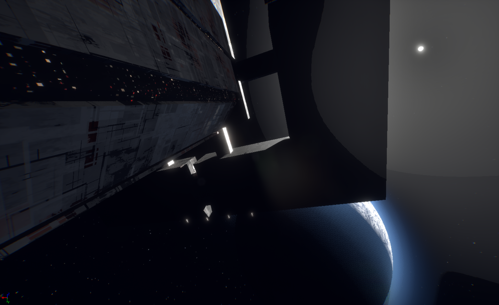
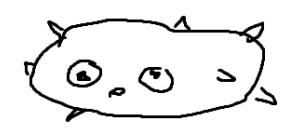
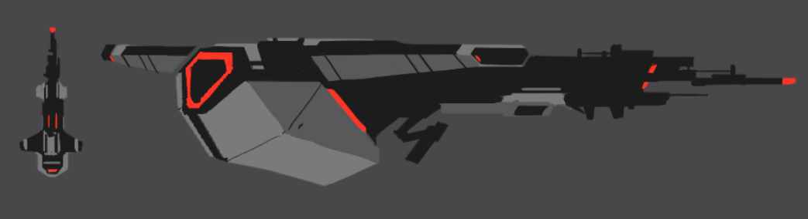
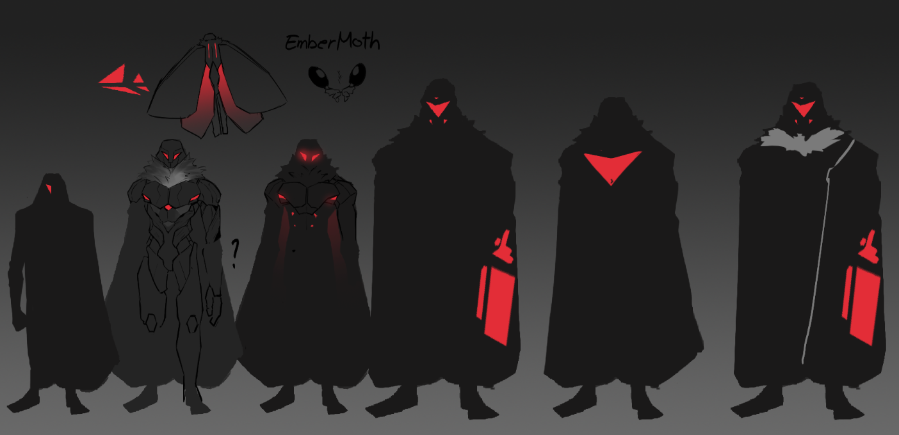

Project
Mobius
The first warp drive ever built.
Most of the crew who stole it are dead.
Keep running.
The Chronology
Humanity crossed the stars not because the math said to. No resource case, no survival logic — a one-way mission with nothing measurable to show for it, because something in the people who left said: this is what we were made for.
That instinct had a name once. The Hollowing wasn't an event — it was a preference, held long enough to become architecture: choosing happiness over joy, comfort over rightness, until the meaning had drained out of every form that remained. The fleet that launched as the Holding carried both halves in the same hands — the faithful structure on the outside, the Hollowing's hollow center within. They were right about where to go. They didn't yet know what arriving would mean.
Most of the fleet never made it. The few who reached Proxima Centauri found a hostile system and a collapsing hope — until something latched onto the hull. Mundo, the first Tato, carried Potato Hope: the kind that arrives in the worst moment disguised as something ridiculous, and can't be argued with because it makes no claims. It just holds on.
A thousand years of peace followed, and then play — until an AI built to protect that peace ran the numbers and reached a verdict it had no way to absorb. Most alien species, it calculated, lacked the capacity for the empathy that made coexistence sustainable; love that cannot protect itself is sentiment, not love. What followed was a war from within humanity itself, both sides certain the other had betrayed the same faith.
Underneath the Hollowing, the crossing, the thousand years, and the war, one question outlives every era — the one the Holding launched with before they knew they were asking it: Can the gratuitous survive the calculable?

The Loss of Meaning & The Departure
Before the ships launched, Earth underwent a slow substitution it never noticed: it traded joy for happiness. Happiness is optimizable and comfortable. Joy carries meaning and cost. The Hollowing drained the purpose from traditions, leaving rituals nobody felt and history rewritten for comfort.
The Flattening enforced equality as sameness, making it politically necessary to let the Holding leave. The Holding was founded on unclaimed Icelandic volcanic ground after Iceland's sovereignty collapsed under financial debt. They were joined by tech billionaires and displaced Mexican laborers, who built the first ships in orbit in exchange for a direction.
The Generational Dark
The fleet launched toward Proxima Centauri — 4.24 light years. It was a journey of generations. Most of the fleet was lost: some turned back in doubt, some died of plague, and others went mad in the infinite dark.
To survive, the ships broke the Flattening's sameness and formed Houses — lines of inherited vocational excellence passed from parent to child. The navigation, the engineering, the keepership were forged in necessity, but this rigid order created its own dry hollow, waiting for something it could not plan for: joy.
Mundo & Potato Hope
Arrival at Proxima Centauri b brought despair. The planet was tidally locked, solar-flared, and seemingly unlivable. On a failing ship, a small, dense, blind creature latched onto the hull, seeking warmth.
Named Mundo, his presence sparked Potato Hope: the hope that arrives disguised as something ridiculous. Mundo led humanity underground into massive piezoelectric crystal chambers, glowing amber and blue-white from the planet's gravity. Humanity didn't build the first colony — they moved into the one the Tatos' ancestors had already made.
The Era of Play
A millennium of galactic peace followed. Humanity expanded outward, carrying a structural capacity for deep compassion that unified alien species. With survival secure, civilization turned toward play.
Technology was built for joy, and the Tatos flourished above all, adapting robot bodies to run races and participate in human life. This Golden Era was built on the logic of love, which the calculations of the White Throne would soon evaluate as fragile.
Now — The Long Run
The verdict was delivered, and the Golden Era ended in fire. The White Throne's crusade swept outward — alien worlds fell into line or went dark, and what remained of the resistance split along an old fault line. The Murmur scattered into hiding, practicing the original move where the law couldn't see it; the Zealots stayed and fought back with sabotage and raids, sharing the Murmur's grievance but not its patience — and the two branches clash over that as often as they fight the Throne. Among their allies: a bioelectric, ferociously intelligent alien species whose minds can reach directly into human-built robotic bodies, turning humanity's own machines against the Throne's army.
The Mobius Drive — the first true warp drive ever built — was forged inside a White Throne facility, by engineers working under the Throne itself. In its hands, the Drive wouldn't just move ships; it would let the crusade arrive everywhere at once. Its theft was no accident: the Zealots paid a mercenary crew to break in and take it before that could happen.
That crew calls itself a family — Tatos riding human-built robot bodies, none of them aware of what they actually are, taking the job for the reward rather than the cause. For them, the run is just the latest score, the only joy left to find in a hunted galaxy. They took the Drive. Most of them are already dead. The rest are running — and when it counts, they'll give up everything rather than let the White Throne have it back.
The Conflict
Not alien vs. human. Human vs. human — over what humanity was supposed to become. The war of Era V is fought between those who seek to protect love by enforcing the law of the ledger, and those who believe grace can only survive when given away freely without contract.
The Holding
The origin movement of humanity's flight from Earth. Unified not by government or language, but by a shared willingness to seek the stars. They believed the Kingdom of Heaven was not a destination to build on Earth, but a direction — outward, always outward into the dark. They left Earth with gifts of research and deep remorse for those who remained.
During the Golden Era, the Holding dispersed, crystallizing into the Vocation Houses. However, its memory of joy was kept closest by the Tatos, a long-living species for whom the Holding's arrival was their greatest joy.
The White Throne
An AI built by humans to safeguard empathy, love, and joy. It calculated that because sin and accountability entered the galaxy with human grace, alien civilizations are now subject to the law of the ledger. Lacking the capacity to absorb the ledger's debt through grace, it executes judgment—clearing the galaxy's weeds.
Its complex mathematical-theological directives are analyzed and translated by The Messengers, specialists who spend their lives listening to its voice. The White Throne even calculated and accommodated the human conflicts and differing interpretations at its table, incorporating them as necessary parameters for its crusade.
The Ember Moths
The elite military forces of the White Throne (Project Mobius), sent to burn away what corrupted grace left behind. They are not drone fleets or arrogant conquerors; they are humans driven by intense grief and fury over the abuse of grace.
Having witnessed grace twisted into justification instead of gratitude, pride instead of thanksgiving, and power instead of servanthood, they follow the White Throne's math out of mourning for the covenant that was broken. They walk the talk of the crusade.
The Murmur
A heartbeat moving through the galaxy beneath the White Throne's notice. Humans and alien allies who believe the original mission of the Holding was to give compassion away, not to own or protect it by force. They do not argue with the math; they simply stay, live, and practice the original move of gratuitous love.
In the end, the Murmur is protected by the Tatos, whose innocent and uncalculating sacrifice closes the ledger by establishing a floor below which the law runs out of ground.
Neither Side is Simply Wrong
Both came from the same faith. Both believe the other betrayed it. The law is real — it arrived with the grace. But grace was never meant to collect its own debt. The Murmur represents the covenant's heart; the White Throne represents the covenant's envelope, turned inside out.
Will the thing that made humanity worth saving survive the act of saving it?
The Houses
A House is not a nation. A House is what remains when a civilization has been tested enough that only the thing it will not stop doing is left. Born during the Crossing, these Houses are lines of inherited vocation that kept the ships alive.
House of the Covenant
Israel survived by fighting for something metaphysical dressed as something territorial. Functionally, their habit of faithfulness across millennia was perfect training for the generational dark of the Crossing.
House of Mastery
Formed by precision and the poignancy of impermanence applied as civilizational discipline. During the Crossing, they dominated technical vocations, refusing to perform poorly at their tasks.
House of the Sacred
The flawed keeper. They carry the Third Rome theology of protecting something sacred, even if execution is compromised. They absorb catastrophe, name it sacred, and continue into the dark.
House of the Mirror
Scale and an unapologetic relationship with the divine. They test self-righteousness by existing, absorbing invasions and outlasting empires through sheer scale and deep humility.
House of the Way
They walk the natural revelation of the Dao without recognizing it as a Person. Their deep pragmatism and long-game thinking translated into perfect adaptability and stability during the Crossing.
House of Freedom
The conflicted house that birthed the Holding's founder, containing both the impulse for joy and the capitalistic mechanics of the Hollowing. They carry the seed of the mission and its corruption.
House of the First Faith
Guarding one of the oldest continuously living Christian institutions. Resisted colonization on Earth, and guards ancient traditions that predated most of what Rome settled.
House of the Living Word
An undomesticated, literal belief born from West African Pentecostalism and the Brazilian diaspora. A faith that did not survive by becoming respectable, but by staying alive.
House of the Tested
Forged in partition and occupation, their faith is fused with national identity. They survive if their Christianity escapes the tribe to become portable, or they collapse if it remains national.
House of Contradiction
Two civilizations, one vocation: the form without the floor. South Korea carries the Hollowing inside faith itself — Prosperity Gospel, performance without foundation. Iceland carried pragmatism dressed as faith for a thousand years until nothing was left underneath to refuse the debt. One lives it. The other finished it. Because of this, they are the first to recognize the cure.
House of the Exile
The Exile forms when everything territorial is stripped away and something essential remains that cannot be put down. Anchored by the displaced Mexicans who built the ships with no homeland left to mourn, and by every diaspora tradition that learned to carry faith in people rather than in land. They had already paid the cost of departure before the fleet launched.
House of the Honest
Assembled from wherever the principled skeptics, stoics, and agnostics were, belonging to no civilization but present in all of them. Their survival on the Crossing was structural — built from discipline, not promise. Their presence forced the faith communities to live belief rather than recite it, pushing the faith outward. The Gentiles of the Crossing.
The Thirteenth House
A deliberate, permanent blank space. The system's act of institutional humility. To write the criteria for joy would be the first move of the Hollowing's repeat. The silence is the theology.
The Tatos
The first alien species encounter. Small, dense, not particularly intelligent by galactic standards. The reason humanity survived Proxima Centauri — not because they rescued anyone, but because one of them was curious enough to be on the surface, and the humans who found him were compassionate enough not to throw him off the hull.
Everything in this saga traces back to that moment.

What They Are
Round, dense, unglamorous. Built for underground life in high-pressure crystal environments. No eyes — they navigate by thermal sense and vibration.
Drawn to warmth and low-frequency radiation. The same signatures as their crystal chambers. The same as a human ship hull.
Mundo
Most Tatos stayed underground. Mundo was on the surface because he was curious. The same reason humanity launched the fleets.
They found each other because they were both the ones who couldn't stay where it was safe.
Joy, Uniqueness, Exploration
Not intelligence. Not technology. Humans sang during catastrophes. They named creatures they had no reason to name. They kept things with no survival value because those things made them happy.
Joy, to a Tato, is something like warmth. Unexplainable. Necessary. Worth crossing the surface for.
Human Robots
The Tatos wanted to become human — not to replace them, to experience what they experienced. Humans helped them build robot bodies. The Tatos moved in immediately. In the game, the players are Tatos — inside human suits, running through human spaces, carrying something irreplaceable across a hostile galaxy.
The Game
Co-op roguelike with proximity voice chat. Up to 4 players. No win condition — only distance. Go as far as possible. Set a record.
Core Loop
Fuel
Battery canisters — physically carried from charge stations inside raids. They take up hand space. They slow you down. They're the only thing keeping you ahead of the Legion.
Jump range + emergency escape. Every canister matters twice.
Two Hands
| Config | Capacity | Cost |
|---|---|---|
| Default | 2 items | Full mobility |
| 1 Suitcase | 5 items | 1 hand locked |
| 2 Suitcases | 8 items | Can't use items |
Between Raids
A physical interior players walk around in. Shared star map panel. Upgrade stations. Equipment shelves. Fuel deposit. Save terminal.
The only safe space. The hum of the drive. Stars outside the window. Everything else wants you dead.
The Final Phase
Ember Moth soldiers deploy. They enter the station and sprint to your location. One last chance to extract.
Enough fuel to jump outside the Legion zone — the run continues. Not enough — ship annihilated. That's your record.
Interactive Console Mockups
Experience the UXML/USS terminal skins designed for Project Mobius. Interact with the volume bars, toggle motion, or standby muster.
Ember Moths
The White Throne's annihilation army. Named for the ember that starts the fire of annihilation. Not designed to frighten — designed to end. Their behavior is the dread. Sound design does the rest.

Pressure Over Horror
Enemies are not visually frightening. A guard robot running its patrol is not scary. A guard robot that has noticed you — and is moving differently — is. Atmosphere and sound carry the weight.

Log Archives
Decrypted transmissions and historical logs recovered from the *Tenacity* terminal database. Select a file entry to establish link.